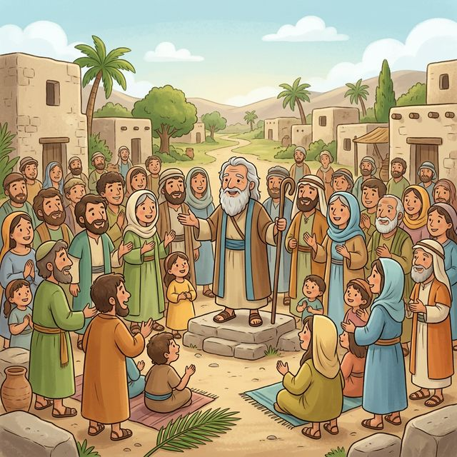
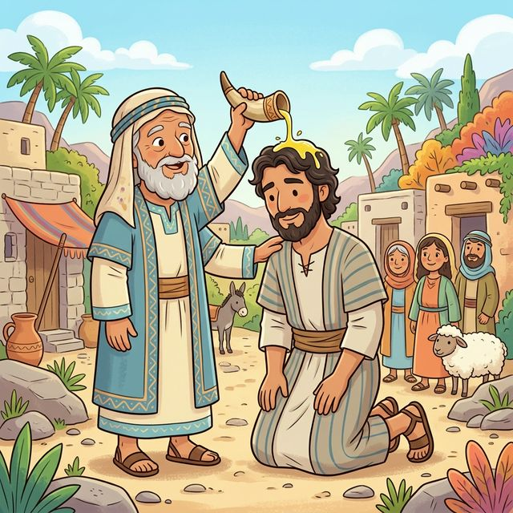

La desobediencia a Dios trae consecuencias, aunque una persona comience bien.
La desobediencia a Dios trae consecuencias, aunque una persona comience bien.
• El pueblo quería un rey como otros países.
• No estaban conformes con lo que Dios había puesto.
"Constitúyenos ahora un rey que nos juzgue, como tienen todas las naciones." — 1 Samuel 8:5-7

• Dios les explica lo que pasaría con un rey.
• Aun así, el pueblo insiste en su decisión.
"Y clamaréis aquel día a causa de vuestro rey..., mas Jehová no os responderá..." — 1 Samuel 8:10-18
• Dios elige a Saúl para guiar a Israel.
• Samuel lo reconoce como el elegido.
"Y cuando Samuel vio a Saúl, Jehová le dijo: He aquí el varón de quien te hablé..." — 1 Samuel 9:15-17
• Samuel lo unge como rey con aceite.
• Dios le da una nueva responsabilidad.
"Tomando entonces Samuel una redoma de aceite, la derramó sobre su cabeza..." — 1 Samuel 10:1

• El pueblo lo acepta formalmente como rey.
• Todos celebran con alegría cívica.
"Y todo el pueblo aclamó, diciendo: ¡Viva el rey!" — 1 Samuel 10:24
• Los amonitas querían hacer daño al pueblo.
• Saúl confía en Dios y reúne al ejército obteniendo victoria.
"Y el terror de Jehová cayó sobre el pueblo, y salieron como un solo hombre." — 1 Samuel 11:6-11
• No esperó a Samuel como tenía mandado.
• Hizo un sacrificio que no le correspondía realizar.
"Me dije: Ahora descenderán los filisteos... y no he implorado el favor de Jehová." — 1 Samuel 13:8-12
• Samuel le dice claramente que hizo mal.
• A causa de esto, Dios ya no lo apoyaría igual en su descendencia.
"Locamente has hecho... Jehová se habría provisto un varón según su corazón." — 1 Samuel 13:13-14
• No obedeció completamente la instrucción divina.
• Hizo lo que quiso al perdonar enemigos y tomar botín.
"Y Saúl y el pueblo perdonaron a Agag, y a lo mejor de las ovejas y del ganado..." — 1 Samuel 15:9
• La falta de obediencia desagrada a Dios profundamente.
• Como consecuencia, Saúl pierde el favor de Dios para ser rey.
"Ciertamente el obedecer es mejor que los sacrificios... Por cuanto tú desechaste la palabra de Jehová..." — 1 Samuel 15:22-23
• Dios escoge a David como nuevo líder.
• Es ungido en secreto por Samuel, empezando una nueva etapa.
"Jehová dijo: Levántate y úngelo, porque éste es. Y Samuel tomó el cuerno del aceite..." — 1 Samuel 16:11-13
• David toca el arpa en la corte.
• Su música ayuda a Saúl cuando se siente atormentado o mal.
"Y cuando el espíritu malo de parte de Dios venía sobre Saúl, David tomaba el arpa y tocaba..." — 1 Samuel 16:21-23
• Confía plena y valientemente en Dios.
• Logra una gran victoria para Israel usando su fe.
"Tú vienes a mí con espada y lanza y jabalina; mas yo vengo a ti en el nombre de Jehová..." — 1 Samuel 17:45-50
• Jonatán (hijo de Saúl) y David se hacen grandes amigos.
• Hacen un pacto profundo de lealtad mutua.
"E hicieron pacto Jonatán y David, porque él le amaba como a sí mismo." — 1 Samuel 18:1-3
• Saúl siente celos mortales de David.
• Lo envía expresamente a batallas peligrosas.
"Saúl, pues, lo alejó de sí, y le hizo jefe de mil... y todo Israel y Judá amaba a David." — 1 Samuel 18:13, 17
• Saúl se llena totalmente de envidia y paranoia.
• Pasa el resto de sus días queriendo hacerle daño.
"Y se enojó Saúl en gran manera... Y Saúl no miraba con buenos ojos a David." — 1 Samuel 18:8-9
• Saúl muere tristemente en batalla.
• Su historia termina muy triste por haberse apartado.
"Entonces dijo Saúl a su escudero: Saca tu espada, y traspásame con ella..." — 1 Samuel 31:4
💡 Mensaje: La desobediencia a Dios trae consecuencias, aunque una persona comience bien.